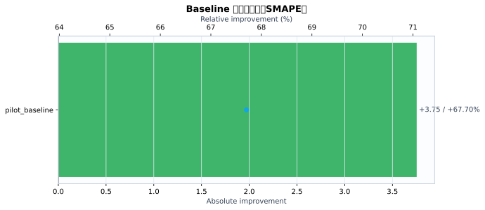
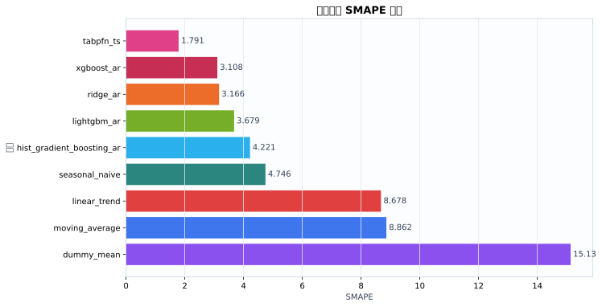
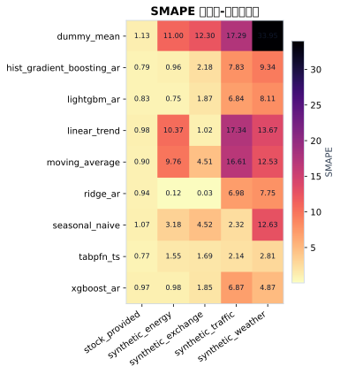
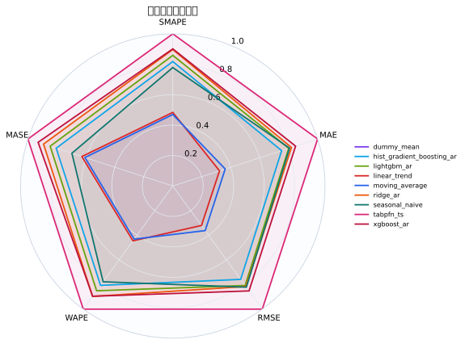
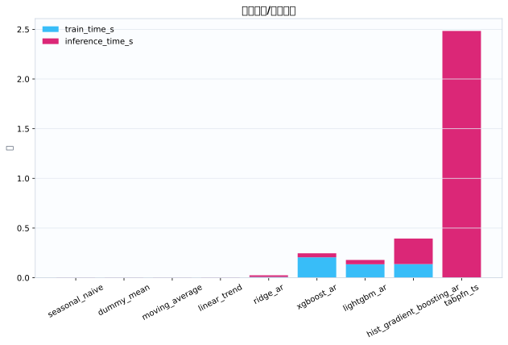
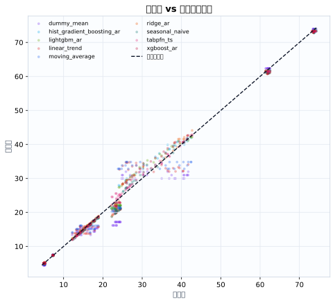
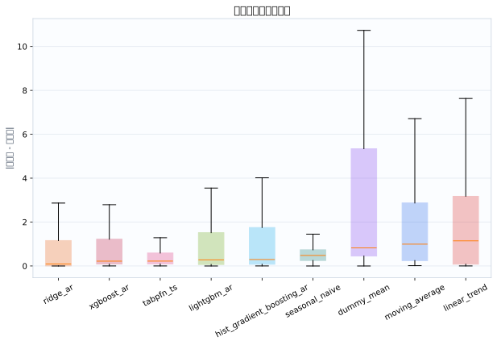

数据集5
模型9
指标行数45
预测行数3024
结论摘要
- 主指标 SMAPE 下，当前 run 的最佳模型是 tabpfn_ts，平均值为 1.791。
- 相对 baseline pilot_baseline，当前最佳模型在 SMAPE 上提升 67.70% （absolute=+3.754）。
核心指标卡片
SMAPE
1.791
最佳模型: tabpfn_ts
GPU_MEMORY_MB
0
最佳模型: dummy_mean
INFERENCE_TIME_S
0.003752
最佳模型: seasonal_naive
MAE
0.3998
最佳模型: tabpfn_ts
MASE
1.634
最佳模型: tabpfn_ts
MSE
0.3608
最佳模型: tabpfn_ts
RMSE
0.5069
最佳模型: tabpfn_ts
TRAIN_TIME_S
0
最佳模型: tabpfn_ts
Baseline 对比
| baseline | metric | current_model | current_value | baseline_model | baseline_value | absolute_difference | relative_improvement_pct |
|---|---|---|---|---|---|---|---|
| pilot_baseline | smape | tabpfn_ts | 1.791 | ridge_ar | 5.545 | 3.754 | 67.7 |
动态交互图表
指标排名动态图
残差直方图
效率-精度散点图
数据集排名轨迹
Matplotlib 可视化图表
Baseline 改变量图
{kind=link}

Baseline/模型平均指标柱状图
{kind=link}

数据集-模型热力图
{kind=link}

多指标雷达图
{kind=link}

运行时间图
{kind=link}

真实值-预测值散点图
{kind=link}

残差箱线图
{kind=link}

训练过程曲线
N/A：当前 run 目录未发现 loss/accuracy/TensorBoard/wandb 训练曲线文件。
错误分析与样本分析
当前支持预测任务的残差与真实-预测散点分析；分类 confusion matrix / ROC / PR 曲线需要真实分类输出后自动启用。
原始 Metrics
| run_id | model | dataset | domain | horizon | context_length | mse | mae | rmse | smape | wape | mase | train_time_s | inference_time_s | gpu_memory_mb |
|---|---|---|---|---|---|---|---|---|---|---|---|---|---|---|
| tabpfn_ts_20260528_155057 | dummy_mean | synthetic_energy | energy | 24 | 96 | 4.204 | 1.69 | 2.05 | 11 | 10.87 | 3.952 | 0.0004558 | 0.003739 | 0 |
| tabpfn_ts_20260528_155057 | seasonal_naive | synthetic_energy | energy | 24 | 96 | 0.2304 | 0.48 | 0.48 | 3.182 | 3.087 | 1.122 | 0.0003034 | 0.003294 | 0 |
| tabpfn_ts_20260528_155057 | moving_average | synthetic_energy | energy | 24 | 96 | 2.995 | 1.509 | 1.731 | 9.763 | 9.701 | 3.526 | 0.0002782 | 0.003374 | 0 |
| tabpfn_ts_20260528_155057 | linear_trend | synthetic_energy | energy | 24 | 96 | 3.448 | 1.6 | 1.857 | 10.37 | 10.29 | 3.74 | 0.0003399 | 0.003789 | 0 |
| tabpfn_ts_20260528_155057 | ridge_ar | synthetic_energy | energy | 24 | 96 | 0.0004802 | 0.0181 | 0.02191 | 0.1233 | 0.1164 | 0.0423 | 0.007255 | 0.01446 | 0 |
| tabpfn_ts_20260528_155057 | hist_gradient_boosting_ar | synthetic_energy | energy | 24 | 96 | 0.05821 | 0.157 | 0.2413 | 0.9634 | 1.009 | 0.3669 | 0.1784 | 0.2691 | 0 |
| tabpfn_ts_20260528_155057 | lightgbm_ar | synthetic_energy | energy | 24 | 96 | 0.03994 | 0.1248 | 0.1998 | 0.7533 | 0.8023 | 0.2917 | 0.165 | 0.0458 | 0 |
| tabpfn_ts_20260528_155057 | xgboost_ar | synthetic_energy | energy | 24 | 96 | 0.04127 | 0.1545 | 0.2031 | 0.9839 | 0.9939 | 0.3613 | 0.2432 | 0.04079 | 0 |
| tabpfn_ts_20260528_155057 | tabpfn_ts | synthetic_energy | energy | 24 | 96 | 0.05868 | 0.2278 | 0.2422 | 1.55 | 1.465 | 0.5325 | 0 | 3.421 | 0 |
| tabpfn_ts_20260528_155057 | dummy_mean | synthetic_traffic | traffic | 24 | 96 | 41.85 | 5.684 | 6.469 | 17.29 | 17.07 | 4.06 | 0.0004832 | 0.003361 | 0 |
| tabpfn_ts_20260528_155057 | seasonal_naive | synthetic_traffic | traffic | 24 | 96 | 0.6827 | 0.6836 | 0.8262 | 2.321 | 2.053 | 0.4883 | 0.0002924 | 0.003331 | 0 |
| tabpfn_ts_20260528_155057 | moving_average | synthetic_traffic | traffic | 24 | 96 | 36.68 | 5.467 | 6.056 | 16.61 | 16.42 | 3.905 | 0.0002725 | 0.003501 | 0 |
| tabpfn_ts_20260528_155057 | linear_trend | synthetic_traffic | traffic | 24 | 96 | 39.22 | 5.709 | 6.262 | 17.34 | 17.14 | 4.078 | 0.0002751 | 0.003779 | 0 |
| tabpfn_ts_20260528_155057 | ridge_ar | synthetic_traffic | traffic | 24 | 96 | 6.166 | 2.21 | 2.483 | 6.982 | 6.637 | 1.579 | 0.007506 | 0.01459 | 0 |
| tabpfn_ts_20260528_155057 | hist_gradient_boosting_ar | synthetic_traffic | traffic | 24 | 96 | 7.745 | 2.463 | 2.783 | 7.826 | 7.395 | 1.759 | 0.1231 | 0.2696 | 0 |
| tabpfn_ts_20260528_155057 | lightgbm_ar | synthetic_traffic | traffic | 24 | 96 | 5.808 | 2.134 | 2.41 | 6.844 | 6.408 | 1.524 | 0.126 | 0.03859 | 0 |
| tabpfn_ts_20260528_155057 | xgboost_ar | synthetic_traffic | traffic | 24 | 96 | 5.838 | 2.153 | 2.416 | 6.872 | 6.465 | 1.538 | 0.188 | 0.04545 | 0 |
| tabpfn_ts_20260528_155057 | tabpfn_ts | synthetic_traffic | traffic | 24 | 96 | 0.5338 | 0.6471 | 0.7306 | 2.136 | 1.943 | 0.4622 | 0 | 2.676 | 0 |
| tabpfn_ts_20260528_155057 | dummy_mean | synthetic_weather | weather | 24 | 96 | 46.63 | 6.815 | 6.829 | 33.95 | 29.02 | 52.27 | 0.0004426 | 0.003081 | 0 |
| tabpfn_ts_20260528_155057 | seasonal_naive | synthetic_weather | weather | 24 | 96 | 8.652 | 2.771 | 2.941 | 12.63 | 11.8 | 21.25 | 0.0003741 | 0.003301 | 0 |
| tabpfn_ts_20260528_155057 | moving_average | synthetic_weather | weather | 24 | 96 | 7.871 | 2.771 | 2.806 | 12.53 | 11.8 | 21.25 | 0.0003607 | 0.003188 | 0 |
| tabpfn_ts_20260528_155057 | linear_trend | synthetic_weather | weather | 24 | 96 | 9.349 | 3.003 | 3.058 | 13.67 | 12.79 | 23.04 | 0.0003569 | 0.003412 | 0 |
| tabpfn_ts_20260528_155057 | ridge_ar | synthetic_weather | weather | 24 | 96 | 4.14 | 1.727 | 2.035 | 7.75 | 7.354 | 13.24 | 0.006756 | 0.01351 | 0 |
| tabpfn_ts_20260528_155057 | hist_gradient_boosting_ar | synthetic_weather | weather | 24 | 96 | 4.626 | 2.099 | 2.151 | 9.343 | 8.939 | 16.1 | 0.08382 | 0.1602 | 0 |
| tabpfn_ts_20260528_155057 | lightgbm_ar | synthetic_weather | weather | 24 | 96 | 3.604 | 1.832 | 1.898 | 8.105 | 7.802 | 14.05 | 0.09935 | 0.03544 | 0 |
| tabpfn_ts_20260528_155057 | xgboost_ar | synthetic_weather | weather | 24 | 96 | 1.448 | 1.12 | 1.203 | 4.87 | 4.77 | 8.59 | 0.1896 | 0.02949 | 0 |
| tabpfn_ts_20260528_155057 | tabpfn_ts | synthetic_weather | weather | 24 | 96 | 0.9804 | 0.6771 | 0.9902 | 2.81 | 2.884 | 5.193 | 0 | 1.422 | 0 |
| tabpfn_ts_20260528_155057 | dummy_mean | synthetic_exchange | economics | 24 | 96 | 0.358 | 0.5915 | 0.5983 | 12.3 | 11.6 | 12.29 | 0.0004794 | 0.004395 | 0 |
| tabpfn_ts_20260528_155057 | seasonal_naive | synthetic_exchange | economics | 24 | 96 | 0.06304 | 0.2254 | 0.2511 | 4.522 | 4.422 | 4.682 | 0.0003906 | 0.004463 | 0 |
| tabpfn_ts_20260528_155057 | moving_average | synthetic_exchange | economics | 24 | 96 | 0.05886 | 0.2254 | 0.2426 | 4.506 | 4.422 | 4.682 | 0.0003663 | 0.004741 | 0 |
| tabpfn_ts_20260528_155057 | linear_trend | synthetic_exchange | economics | 24 | 96 | 0.003342 | 0.05211 | 0.05781 | 1.021 | 1.022 | 1.082 | 0.0003712 | 0.004793 | 0 |
| tabpfn_ts_20260528_155057 | ridge_ar | synthetic_exchange | economics | 24 | 96 | 3.513e-06 | 0.001679 | 0.001874 | 0.03285 | 0.03293 | 0.03486 | 0.00928 | 0.01989 | 0 |
| tabpfn_ts_20260528_155057 | hist_gradient_boosting_ar | synthetic_exchange | economics | 24 | 96 | 0.01749 | 0.1108 | 0.1322 | 2.184 | 2.174 | 2.302 | 0.1567 | 0.2932 | 0 |
| tabpfn_ts_20260528_155057 | lightgbm_ar | synthetic_exchange | economics | 24 | 96 | 0.01304 | 0.09495 | 0.1142 | 1.867 | 1.863 | 1.972 | 0.1388 | 0.04338 | 0 |
| tabpfn_ts_20260528_155057 | xgboost_ar | synthetic_exchange | economics | 24 | 96 | 0.01252 | 0.09394 | 0.1119 | 1.847 | 1.843 | 1.951 | 0.2011 | 0.04503 | 0 |
| tabpfn_ts_20260528_155057 | tabpfn_ts | synthetic_exchange | economics | 24 | 96 | 0.01024 | 0.08567 | 0.1012 | 1.685 | 1.681 | 1.779 | 0 | 2.387 | 0 |
| tabpfn_ts_20260528_155057 | dummy_mean | stock_provided | finance | 24 | 96 | 0.1203 | 0.2866 | 0.3468 | 1.129 | 0.6012 | 0.1588 | 0.0004974 | 0.004517 | 0 |
| tabpfn_ts_20260528_155057 | seasonal_naive | stock_provided | finance | 24 | 96 | 0.2353 | 0.3742 | 0.4851 | 1.075 | 0.7847 | 0.2073 | 0.0003806 | 0.00437 | 0 |
| tabpfn_ts_20260528_155057 | moving_average | stock_provided | finance | 24 | 96 | 0.226 | 0.3654 | 0.4754 | 0.8962 | 0.7664 | 0.2025 | 0.0003708 | 0.004476 | 0 |
| tabpfn_ts_20260528_155057 | linear_trend | stock_provided | finance | 24 | 96 | 0.4211 | 0.4855 | 0.6489 | 0.9792 | 1.018 | 0.269 | 0.0003683 | 0.004787 | 0 |
| tabpfn_ts_20260528_155057 | ridge_ar | stock_provided | finance | 24 | 96 | 0.2715 | 0.4016 | 0.521 | 0.9435 | 0.8422 | 0.2225 | 0.009168 | 0.0199 | 0 |
| tabpfn_ts_20260528_155057 | hist_gradient_boosting_ar | stock_provided | finance | 24 | 96 | 0.3038 | 0.4152 | 0.5512 | 0.7868 | 0.8708 | 0.2301 | 0.1452 | 0.2932 | 0 |
| tabpfn_ts_20260528_155057 | lightgbm_ar | stock_provided | finance | 24 | 96 | 0.3042 | 0.4162 | 0.5516 | 0.8269 | 0.873 | 0.2307 | 0.1492 | 0.05377 | 0 |
| tabpfn_ts_20260528_155057 | xgboost_ar | stock_provided | finance | 24 | 96 | 0.4037 | 0.4644 | 0.6353 | 0.9658 | 0.9739 | 0.2573 | 0.2066 | 0.04173 | 0 |
| tabpfn_ts_20260528_155057 | tabpfn_ts | stock_provided | finance | 24 | 96 | 0.221 | 0.3613 | 0.4701 | 0.7728 | 0.7578 | 0.2002 | 0 | 2.514 | 0 |
配置参数
展开/折叠配置
{
"/home/wanyi/zy_test/tabpfn-ts-benchmark/configs/config.yaml": {
"defaults": [
{
"dataset": "etth1"
},
{
"model": "seasonal_naive"
},
{
"experiment": "e1_zeroshot"
},
"_self_"
],
"seed": 42,
"output_dir": "results",
"wandb": {
"project": "tabpfn-quant",
"mode": "offline",
"entity": null
},
"hydra": {
"run": {
"dir": "outputs/${now:%Y-%m-%d}/${now:%H-%M-%S}"
}
}
}
}运行环境
{
"python": "3.10.12",
"platform": "Linux-6.8.0-111-generic-x86_64-with-glibc2.35",
"git_head": "N/A",
"git_dirty": false
}Warnings
- 无
产物链接
- metrics.json
- summary.csv
- 源 run 目录: /home/wanyi/zy_test/tabpfn-ts-benchmark/results/full_benchmark_v2_c96_h24_s3
- 主指标: smape